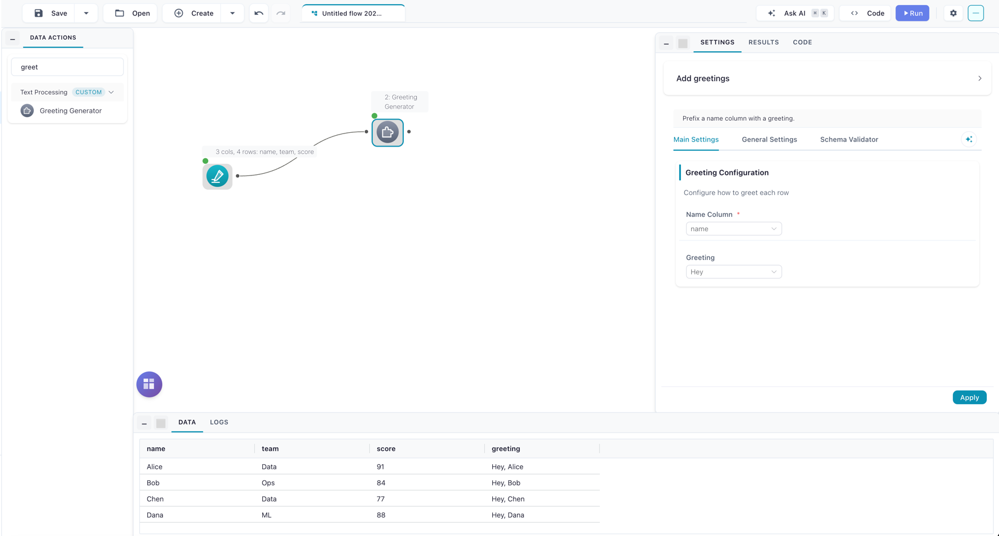

Custom Nodes in Code
This page is the SDK reference for writing a custom node as a Python file by hand — the class structure, the settings components, type filtering, the process() contract, execution environments, and the dry-run test loop. It's written for developers who want node definitions in version control, generated programmatically, or shared as plain files.
You don't need this page to build a custom node
The Node Designer builds the same nodes visually — settings form, transform, test run, save — and writes this file for you. If you're new to custom nodes, start with the guided tutorial instead. The two paths interoperate: a file that stays within the visual subset of the SDK reopens in the visual editor, so you can start visually and drop to code later (or the other way around).
What are custom nodes?
Custom nodes extend Flowfile with your own data transformations that appear alongside the built-in nodes in the visual editor. Each one is a single .py file — the file is the whole node, the single source of truth. A node has:
- A settings panel — generated automatically from a schema (dropdowns, inputs, toggles, column pickers).
- Processing logic — a
process()method written in Polars. - Palette placement — driven by
node_category(see Palette placement).
The canonical import
Import the SDK through the flowfile package and alias it nd:
from flowfile import node_designer as nd
nd.CustomNodeBase, nd.Section, nd.ColumnSelector, nd.Types, and every other symbol come from this one import. The SDK lives in shared/node_designer and is side-effect-free — importing it pulls in no database, no migrations, and no other Flowfile internals — which is what lets your node run in the worker and in isolated kernels.
The import contract
A custom node file may import only the node-designer SDK (plus the standard library and third-party packages). Importing any other flowfile / flowfile_core internal from a node file raises an ImportError when the node runs in the worker. The designer warns about such imports at save time.
Older files that import from flowfile_core.flowfile.node_designer import ... still load through a compatibility shim — the symbols are the same classes — but new files should use the canonical spelling.
Quick start
1. Create your first node
Create a Python file in your custom-nodes directory:
~/.flowfile/user_defined_nodes/my_first_node.py
Custom-node location
The ~/.flowfile/user_defined_nodes/ directory is created the first time you run Flowfile. Files placed there are picked up automatically. You can also register additional directories — see Mounting other directories.
Here is a complete node that adds a greeting column. Note the process signature — it receives one or more pl.LazyFrame inputs (variadic *inputs) and returns a pl.LazyFrame or pl.DataFrame:
import polars as pl
from flowfile import node_designer as nd
class GreetingSettings(nd.NodeSettings):
main_config: nd.Section = nd.Section(
title="Greeting Configuration",
description="Configure how to greet each row",
name_column=nd.ColumnSelector(
label="Name Column",
data_types=nd.Types.String,
required=True,
),
greeting=nd.SingleSelect(
label="Greeting",
options=[
("formal", "Hello"),
("casual", "Hey"),
],
default="casual",
),
)
class GreetingNode(nd.CustomNodeBase):
node_name: str = "Greeting Generator"
node_category: str = "Text Processing"
title: str = "Add greetings"
intro: str = "Prefix a name column with a greeting."
settings_schema: GreetingSettings = GreetingSettings()
def process(self, *inputs: pl.LazyFrame) -> pl.LazyFrame:
lf = inputs[0]
name_col = self.settings_schema.main_config.name_column.value
style = self.settings_schema.main_config.greeting.value
word = "Hello" if style == "formal" else "Hey"
return lf.with_columns(
pl.concat_str([pl.lit(f"{word}, "), pl.col(name_col)]).alias("greeting")
)
2. Use your node
- Save the file. Flowfile hot-reloads the custom-nodes directory on save — no restart. If the node was added while Flowfile was already open, click Rescan in the Node Designer's browser (or the Catalog's Custom Nodes tab) to pick it up.
- Open the visual editor.
- Find your node in the palette. It lands in the group named after its
node_category(see Palette placement). - Drag it onto the canvas and connect an input.
- Configure the settings in the right panel.
- Run your flow.
The result: the node on the canvas with its generated settings form

Node structure
Every custom node has three parts: metadata, a settings schema, and a process method.
import polars as pl
from flowfile import node_designer as nd
class MyCustomNode(nd.CustomNodeBase):
# 1. Metadata — how the node appears in Flowfile
node_name: str = "My Node"
node_category: str = "Data Enhancement"
title: str = "Add greetings"
intro: str = "Prefix a name column with a greeting."
# 2. Settings schema — the UI configuration
settings_schema: MySettings = MySettings()
# 3. Processing logic — what the node does
def process(self, *inputs: pl.LazyFrame) -> pl.LazyFrame:
lf = inputs[0]
# ... transformation logic ...
return lf
The process contract
process is the engine of the node.
- Inputs are always
pl.LazyFrame. One frame per connected input port, passed positionally:inputs[0]is the first port,inputs[1]the second, and so on. This holds everywhere the node runs — worker, local fallback, isolated kernel, and dry-run. - Return a
pl.LazyFrameorpl.DataFrame. The framework normalizes either. For a multi-output node, return adict[str, pl.LazyFrame | pl.DataFrame]keyed by output name (see Multiple outputs). - Reading settings:
self.settings_schema.<section_name>.<component_name>.value.
Collect only when you must
Because inputs are lazy, prefer to express the transform as lazy Polars operations and return the LazyFrame unmaterialized — that keeps the frame streamable. If a step genuinely needs eager data (row-wise Python, map_elements, a shape-dependent branch), call .collect() inside process on just that frame. process never runs on core's hot path, so an in-node .collect() is fine — it materializes in the worker subprocess, not in core.
Declaring the output schema — predict_output_schema
By default, Flowfile predicts a custom node's output schema by actually running process on schema-only frames — and a kernel node is never run implicitly at all, so its columns stay unknown until it runs. Implementing the optional predict_output_schema method skips all of that: you declare the output schema as a pure function of the input schemas and the node's settings, and prediction becomes instant.
The signature mirrors process — return a frame and Flowfile reads its schema lazily. For a node built from pure polars expressions, prediction is one line:
def predict_output_schema(self, *inputs: pl.LazyFrame) -> pl.LazyFrame:
# Inputs are schema-only (no rows); pure polars logic predicts itself.
return self.process(*inputs)
- One
pl.LazyFramearrives per connected input port, in the same order asprocess. By default each is a schema-only empty frame — the hook derives the output schema from input schemas and settings alone. - Data-dependent schemas opt in with
requires_data_for_prediction = True: pre-run inputs then carry the upstream's real lazy data whenever everything un-run upstream is kernel-free. A one-hot encoder cancollect()theunique()values of a column and build its dummy columns from them — just handle the empty case (returningNoneis a fine answer, and prediction upgrades itself after the first run). When an un-run kernel node sits upstream, Flowfile never executes it implicitly: prediction shows a "run it to resolve" warning instead. - Return a
pl.LazyFrame(orpl.DataFrame); for a multi-output node return adict[str, pl.LazyFrame]keyed by output name. A hand-builtpl.Schemaalso works. - Return
None(or raise) to fall back to the default execution-based prediction.
In the Node Designer, the Code tab has a collapsible Schema prediction (optional) panel below the process editor — it scaffolds the method for you and edits just the body under a read-only signature, exactly like the process editor. The panel's Schema depends on data values checkbox is the requires_data_for_prediction flag.
It runs in the main process
predict_output_schema always runs in the main Flowfile process — even for environment="kernel" nodes — so it must not depend on kernel-only packages. Read settings the same way as in process, and keep any data peeks bounded (unique lists, small samples): this runs when settings panels open.
Data-dependent nodes without a hook
Setting requires_data_for_prediction = True on a node without predict_output_schema disables implicit prediction entirely: Flowfile will not run process just to discover the columns. The node — and everything downstream of it — shows "Columns can't be predicted yet: … Run it to resolve them." until the node has actually run once. Use this marker when the output schema genuinely depends on data values (so predicting on empty frames would be wrong) and a data-free hook isn't possible; the Node Designer shows a warning for this combination and nudges you toward adding schema prediction instead. At the default (False), Flowfile predicts by running process on empty schema-only frames, which is correct for any schema-stable transformation.
Palette placement
node_category is a real palette group. A node with node_category = "Text Processing" appears under a Text Processing group in the palette; the group is created from the category name (slugified internally, displayed as written). The default category, "Custom", keeps the historical User Defined Operations group. A node can also target a built-in group by naming it exactly.
Settings architecture
Settings are organized into sections. Each Section becomes a collapsible panel in the node's settings drawer; components are passed as keyword arguments, and the keyword is the field name you read in process.
class MyNodeSettings(nd.NodeSettings):
basic_config: nd.Section = nd.Section(
title="Basic Settings",
description="Core options",
input_column=nd.ColumnSelector(...),
operation_type=nd.SingleSelect(...),
)
advanced_options: nd.Section = nd.Section(
title="Advanced Options",
description="Fine-tune behavior",
enable_caching=nd.ToggleSwitch(...),
max_iterations=nd.NumericInput(...),
)
A Section accepts a few non-component keywords alongside its controls:
title— the panel heading.description— helper text shown under the title.layout—"vertical"(default, controls stacked) or"horizontal". Horizontal flows controls side by side and wraps wide controls to their own row — handy for lining up a few small inputs instead of a tall stack.
class MyNodeSettings(nd.NodeSettings):
bounds: nd.Section = nd.Section(
title="Bounds",
layout="horizontal",
lower=nd.NumericInput(label="Lower"),
upper=nd.NumericInput(label="Upper"),
)
title, description, and layout are all editable from the visual designer's
Section inspector (select a group with no control selected).
Available UI components
Flowfile ships nine settings components:
| Component | Value in process |
Reach for it when |
|---|---|---|
| Text Input | str |
Free-form text, or a column name typed by hand |
| Numeric Input | float |
Exact numeric entry, optional bounds |
| Slider | float |
A bounded value where dragging beats typing |
| Toggle Switch | bool |
A single on/off flag |
| Single Select | str |
One choice from a fixed list |
| Multi Select | list[str] |
Several choices from a fixed list |
| Column Selector | str / list[str] |
Picking input columns, with type filtering |
| Column Action | ColumnActionValue |
Pairing columns with an operation and output name |
| Secret Selector | SecretStr \| None |
Stored credentials (API keys, passwords) |
Each one below is documented the same way: what it does, what it returns (shown in the heading as accessor → type, plus how you read it in process), how to configure it, whether it needs a connected input, and when to reach for it.
Read a component's value in process with self.settings_schema.<section>.<field>.value — the one exception is SecretSelector, which uses .secret_value.
Text Input — .value → str
A single-line text field for a free-form string.
text_field = nd.TextInput(
label="Enter a value",
default="Default text",
placeholder="Hint text here...",
)
Configure — default, placeholder. Needs a connected input: no.
prefix = self.settings_schema.options.prefix.value
return lf.with_columns((pl.lit(prefix) + pl.col("name")).alias("greeting"))
When to use — free-form text, or a column name typed by hand.
Numeric Input — .value → float
A number field with optional minimum and maximum bounds. The value is always a float, even when a whole number is entered — cast with int(...) if you need an integer.
number_field = nd.NumericInput(
label="Count",
default=10,
min_value=1,
max_value=100,
)
Configure — default, min_value, max_value. Needs a connected input: no.
threshold = self.settings_schema.options.threshold.value
return lf.filter(pl.col("amount") > threshold)
When to use — exact numeric entry with optional bounds (use Slider when a bounded slider is friendlier than typing).
Slider — .value → float
A slider for choosing a numeric value within a fixed range. When no default is given the value starts at min_value.
sample_field = nd.SliderInput(
label="Rows to keep",
min_value=0,
max_value=100,
step=5,
default=10,
)
Configure — min_value (0), max_value (100), step (1), default. Needs a connected input: no.
top_n = self.settings_schema.options.top_n.value
return lf.head(int(top_n))
When to use — a bounded numeric value where dragging beats typing.
Toggle Switch — .value → bool
A boolean on/off switch.
toggle_field = nd.ToggleSwitch(
label="Enable feature",
default=True,
description="Turn this on to enable the feature",
)
Configure — default (False), description. Needs a connected input: no.
if self.settings_schema.options.drop_nulls.value:
lf = lf.drop_nulls()
return lf
When to use — a single on/off feature flag.
Single Select — .value → str
A dropdown for picking one option from a list.
choice_field = nd.SingleSelect(
label="Choose option",
options=[
("value1", "Display Name 1"),
("value2", "Display Name 2"),
],
default="value1",
)
Configure — options (a static list, or the IncomingColumns / AvailableArtifacts marker), default. Needs a connected input: only with options=nd.IncomingColumns (see Dynamic options).
op = self.settings_schema.options.aggregation.value # e.g. "sum"
return lf.select(getattr(pl.col("amount"), op)())
When to use — one choice from a fixed list. For picking a single input column, prefer Column Selector; reach for options=nd.IncomingColumns only for a lightweight column dropdown.
Picking artifacts with AvailableArtifacts
options=nd.AvailableArtifacts(scope="global") populates the dropdown from the catalog. Each entry is one artifact, not one version — the value stored in the node settings is a namespace-qualified reference (catalog.schema::name, or the bare name for an artifact with no namespace), and the node resolves the latest version of that artifact at run time. With scope="all" the catalog entries are qualified the same way, but a pick from the upstream part of the list stores the artifact's plain in-flow name. There is no version pinning here; pin a version from Kernel code with flowfile_ctx.get_global(name, version=N). Settings saved before qualified references existed are bare names: opening a scope="global" selector upgrades one to its qualified form when the name is unique across namespaces, and clears it when the name now exists in more than one namespace so you re-pick (that value could not resolve server-side either). A scope="all" selector never rewrites its saved value, since that value may name an upstream artifact.
Multi Select — .value → list[str]
A dropdown for picking several options from a list.
multi_field = nd.MultiSelect(
label="Select multiple",
options=[
("opt1", "Option 1"),
("opt2", "Option 2"),
("opt3", "Option 3"),
],
default=["opt1", "opt2"],
)
Configure — options (same as Single Select), default (an empty list). Needs a connected input: only with options=nd.IncomingColumns.
ops = self.settings_schema.cleaning.operations.value # ["lowercase", "trim"]
expr = pl.col("text")
if "lowercase" in ops:
expr = expr.str.to_lowercase()
return lf.with_columns(expr.alias("clean"))
When to use — several choices from a fixed list.
Column Selector — .value → str | list[str]
A picker for one or more columns from the input frame, optionally filtered by data type (see Type filtering). Returns a single column name, or a list[str] when multiple=True.
# Any column
any_column = nd.ColumnSelector(label="Pick a column", data_types=nd.Types.All)
# Numeric columns only, required
numeric_column = nd.ColumnSelector(
label="Numeric column only",
data_types=nd.Types.Numeric,
required=True,
)
# Multiple string/categorical columns
text_columns = nd.ColumnSelector(
label="Text columns",
data_types=[nd.Types.String, nd.Types.Categorical],
multiple=True,
)
Configure — required (False), multiple (False), data_types ("ALL"). Needs a connected input: yes — the choices come from the input schema.
cols = self.settings_schema.config.columns.value # str, or list[str] when multiple=True
return lf.select(cols)
When to use — the purpose-built, type-filterable column picker. Prefer it over SingleSelect(IncomingColumns) whenever you are choosing real input columns.
Column Action — .value → ColumnActionValue
A table where the user pairs input columns with an action and an output name, with optional group-by and order-by pickers. Built for aggregations, rolling windows, string operations, and type casts.
column_actions = nd.ColumnActionInput(
label="Aggregations",
actions=[
nd.ActionOption("sum", "Sum"),
nd.ActionOption("mean", "Average"),
"min", # plain strings also work
],
output_name_template="{column}_{action}",
show_group_by=True,
data_types=nd.Types.Numeric,
)
Configure — actions (strings or nd.ActionOption(value, label)), output_name_template ("{column}_{action}"), show_group_by (False), show_order_by (False), data_types. Needs a connected input: yes.
The value is a typed nd.ColumnActionValue with attribute access:
cfg.rows # list[nd.ColumnActionRow], each with .column / .action / .output_name (all str)
cfg.group_by_columns # list[str] ([] unless show_group_by=True)
cfg.order_by_column # str | None (None unless show_order_by=True)
cfg = self.settings_schema.agg.column_actions.value
return lf.group_by(cfg.group_by_columns).agg([
getattr(pl.col(r.column), r.action)().alias(r.output_name)
for r in cfg.rows
])
When to use — to pair many columns with an operation and an output name in one table. Column Selector only returns column names; Column Action returns column + action + output rows.
Annotate for autocomplete
Section components are populated dynamically, so the attribute chain
(self.settings_schema.agg.column_actions.value) is untyped to the editor even though the
value is a real nd.ColumnActionValue at runtime. Annotate the local once to get full
autocomplete on cfg. and each r.:
cfg: nd.ColumnActionValue = self.settings_schema.agg.column_actions.value
You interpret the actions
The action strings are yours to act on in process — the component collects the rows, it does not run the operations for you.
Secret Selector — .secret_value → SecretStr | None
A dropdown listing the secrets the current user has stored (API keys, credentials, tokens). Only the secret's name shows in the UI; its value is resolved at run time. Add it inside a Section like any other component — it has only a label, no name=.
class ApiSettings(nd.NodeSettings):
connection: nd.Section = nd.Section(
title="Connection",
api_key=nd.SecretSelector(label="API Key"),
)
class MyNode(nd.CustomNodeBase):
node_name: str = "API Reader"
settings_schema: ApiSettings = ApiSettings()
def process(self, *inputs: pl.LazyFrame) -> pl.LazyFrame:
secret = self.settings_schema.connection.api_key.secret_value
if secret is not None:
api_key = secret.get_secret_value() # the decrypted string
...
Configure — required (False), description, name_prefix. Needs a connected input: no.
secret_value returns a SecretStr (or None when nothing is selected); call .get_secret_value() for the plaintext. It is only resolvable during execution. On a run, core pre-resolves the secret to its $ffsec$ ciphertext and ships that to the worker, which decrypts it locally; the plaintext never leaves the worker process.
Secrets are not available in isolated kernels
A node whose environment = "kernel" runs its process in a Docker kernel that has no access to the secret store. Reading secret_value inside a kernel node raises at runtime. Use environment = "local" (the default) for secret-backed nodes.
Dynamic options from the input
SingleSelect and MultiSelect can populate their choices from the input's column names instead of a static list — pass the IncomingColumns marker:
column_dropdown = nd.SingleSelect(
label="Choose input column",
options=nd.IncomingColumns,
)
For choosing columns to operate on, Column Selector is usually the better fit — it adds type filtering, multi-select, and a required flag.
Type filtering
ColumnSelector and ColumnActionInput accept a data_types filter. nd.Types provides type groups and specific types:
# Type groups
nd.Types.Numeric # all numeric types
nd.Types.String # string and categorical
nd.Types.AnyDate # date, datetime, time, duration
nd.Types.Boolean # boolean columns
nd.Types.All # all column types
# Specific types
nd.Types.Int64
nd.Types.Float
nd.Types.Decimal
nd.Types.Date # the Date type specifically (not the date group)
# Mix
data_types=[nd.Types.Numeric, nd.Types.AnyDate]
Execution environment
Every node declares where its process runs, via the environment attribute:
class MyNode(nd.CustomNodeBase):
node_name: str = "My Node"
environment: str = "local" # "local" (default) or "kernel"
dependencies: list[str] = [] # pip specs, kernel-only
"local"(default) —processruns in aflowfile_workersubprocess: a killable, isolated child process that owns the dataset memory. The worker environment does not pip-install anything, so a local node may use only packages already available to Flowfile."kernel"—processruns inside an isolated Docker kernel. Use this when the node needs third-party libraries or stronger isolation. Declare them independencies(e.g.dependencies = ["scikit-learn", "xgboost"]) — the list travels with the node and is a requirement, not an install step: run the node on a kernel that already has the packages. Flowfile enforces and eases that requirement: the node's kernel picker marks kernels that satisfy the list (version-aware), offers Add missing packages on a partial match, and Create kernel for this node pre-fills a new kernel from the requirements; running on a kernel that provably lacks a dependency fails fast with a clear message instead of aModuleNotFoundErrorfrom insideprocess. The standard ML kernel image ships scikit-learn, XGBoost, LightGBM, and statsmodels; anything else can be baked into a kernel when it's created in the Kernel Manager. Kernel nodes can also declare multiple named outputs. Secrets are not available in kernel nodes. For a full worked example — including setting up the right kernel — see K-Means on a Kernel.
Import kernel-only libraries inside process
Put imports for packages that live only in the kernel (scikit-learn, xgboost, …) inside process, not at the top of the file. Flowfile core loads your node file to register it in the palette, and core doesn't have the kernel's dependencies — a top-level import of one would make the node load with an error. The import runs only in the kernel, which has the package.
The legacy requires_kernel = True flag still loads (it maps to environment = "kernel" with a deprecation warning), as does a class-level kernel_id. Prefer environment in new code.
Docker required for kernel nodes
Kernel execution needs Docker. When Docker is unavailable, the Node Designer's environment picker shows the local option only and explains how to enable kernels. See Kernel Execution.
Multiple inputs
A node reads as many input frames as it declares in number_of_inputs; they arrive positionally in *inputs, in the order the input ports are connected on the canvas.
class JoinerSettings(nd.NodeSettings):
keys: nd.Section = nd.Section(
title="Join Keys",
left_key=nd.TextInput(label="Left key column", default="id"),
right_key=nd.TextInput(label="Right key column", default="id"),
)
class TwoInputJoiner(nd.CustomNodeBase):
node_name: str = "Inner Join Two Inputs"
node_category: str = "Joins"
number_of_inputs: int = 2
settings_schema: JoinerSettings = JoinerSettings()
def process(self, *inputs: pl.LazyFrame) -> pl.LazyFrame:
left, right = inputs[0], inputs[1]
left_key = self.settings_schema.keys.left_key.value
right_key = self.settings_schema.keys.right_key.value
return left.join(right, left_on=left_key, right_on=right_key, how="inner")
Multiple outputs
Declare the output names in output_names; process then returns a dict keyed by those names. Each name becomes a separate output handle on the node.
class SplitterSettings(nd.NodeSettings):
config: nd.Section = nd.Section(
title="Split",
threshold_column=nd.ColumnSelector(
label="Numeric column",
data_types=nd.Types.Numeric,
required=True,
),
threshold=nd.NumericInput(label="Threshold", default=0.0),
)
class ThresholdSplitter(nd.CustomNodeBase):
node_name: str = "Threshold Splitter"
node_category: str = "Filtering"
number_of_outputs: int = 2
output_names: list[str] = ["above", "below"]
settings_schema: SplitterSettings = SplitterSettings()
def process(self, *inputs: pl.LazyFrame) -> dict[str, pl.LazyFrame]:
lf = inputs[0]
col = self.settings_schema.config.threshold_column.value
cutoff = self.settings_schema.config.threshold.value
return {
"above": lf.filter(pl.col(col) >= cutoff),
"below": lf.filter(pl.col(col) < cutoff),
}
Every declared name must be present in the returned dict, or the run fails with an explicit error naming the missing output.
Testing a node before you ship it
You do not need to add a node to a flow to test it. Two paths run its process against sample data:
- In the designer: the Test tab runs the node against a small sample you provide (grid or CSV paste) and shows a per-output preview, logs, and any error — the same execution path as a real run. A kernel-environment node runs on the kernel you pick in the Test tab's Kernel selector, so pick one that has the node's dependencies.
- Bake samples into the file: two optional class attributes make the dry-run reproducible and travel with the node:
class MyNode(nd.CustomNodeBase):
node_name: str = "My Node"
settings_schema: MySettings = MySettings()
# One column-oriented dict per input port.
example_inputs: list[dict[str, list]] = [
{"name": ["Alice", "Bob"], "score": [91, 40]},
]
# The settings values to test with: {section: {component: value}}.
example_settings: dict[str, dict] = {
"config": {"threshold_column": "score", "threshold": 50.0},
}
example_inputs is column-oriented — one {column: [values]} dict per input port, directly constructible with pl.LazyFrame(...). Both attributes round-trip through the designer: saving "test setup with node" in the Test tab writes them into the file, and reopening the node restores them.
Under the hood, both the designer's Test tab and the example_inputs path call the dry-run endpoint (POST /user_defined_components/dry-run), which runs the candidate node against the bounded sample frames through the same worker seam as a real run (with flow_id = -1 and row/timeout caps).
Logging from process
To trace what a node is doing during a dry run, call logging or print inside process — the output appears in the Test tab's Logs panel, one line per call, tagged with its level:
def process(self, *inputs: pl.LazyFrame) -> pl.LazyFrame:
logging.info("rows in: %d", inputs[0].select(pl.len()).collect().item())
logging.debug("threshold = %s", self.settings_schema.config.threshold.value)
print("checkpoint reached")
return inputs[0].filter(...)
You do not need import logging — the name is available inside process, and everything from DEBUG up is captured (the editor autocompletes logging. too). This is dry-run only; in a real flow run these lines go to the flow log instead.
Worker execution semantics
For a "local" node, a run does not execute process inside core. Core ships the node's source text, the resolved settings values, any secret ciphertext, and the serialized input plans to flowfile_worker, which:
- Registers alias modules so the SDK import spellings resolve, then loads the node source in a spawned subprocess.
- Enforces the import contract — a non-SDK
flowfileimport raises here. - Instantiates the node, applies settings, decrypts any secrets locally, and calls
process(*lazy_inputs). - Writes each output as Arrow IPC and returns paths and row counts. Core binds the primary output back with
pl.scan_ipcand never materializes the dataset.
This is why the import contract and the lazy process signature matter: the node body must run standalone in a process that has the SDK but not the rest of core.
Real-world examples
Data quality node
class DataQualityNode(nd.CustomNodeBase):
node_name: str = "Data Quality Checker"
node_category: str = "Data Validation"
settings_schema: nd.NodeSettings = nd.NodeSettings(
validation_rules=nd.Section(
title="Validation Rules",
columns_to_check=nd.ColumnSelector(
label="Columns to Validate",
data_types=nd.Types.All,
multiple=True,
),
null_threshold=nd.NumericInput(
label="Max Null Percentage",
default=5.0,
min_value=0,
max_value=100,
),
)
)
def process(self, *inputs: pl.LazyFrame) -> pl.LazyFrame:
lf = inputs[0]
columns = self.settings_schema.validation_rules.columns_to_check.value
threshold = self.settings_schema.validation_rules.null_threshold.value
# Row count is shape-dependent, so collect once for the null ratios.
df = lf.collect()
row_count = df.height
result = df
for col in columns:
null_pct = (df[col].null_count() / row_count) * 100 if row_count else 0.0
if null_pct > threshold:
result = result.with_columns(
pl.col(col).is_null().alias(f"{col}_has_issues")
)
return result
Text processing node
class TextCleanerNode(nd.CustomNodeBase):
node_name: str = "Text Cleaner"
node_category: str = "Text Processing"
settings_schema: nd.NodeSettings = nd.NodeSettings(
cleaning_options=nd.Section(
title="Cleaning Options",
text_column=nd.ColumnSelector(
label="Text Column",
data_types=nd.Types.String,
required=True,
),
operations=nd.MultiSelect(
label="Cleaning Operations",
options=[
("lowercase", "Convert to lowercase"),
("remove_punctuation", "Remove punctuation"),
("trim", "Trim whitespace"),
],
default=["lowercase", "trim"],
),
output_column=nd.TextInput(label="Output Column Name", default="cleaned_text"),
)
)
def process(self, *inputs: pl.LazyFrame) -> pl.LazyFrame:
lf = inputs[0]
text_col = self.settings_schema.cleaning_options.text_column.value
operations = self.settings_schema.cleaning_options.operations.value
output_col = self.settings_schema.cleaning_options.output_column.value
expr = pl.col(text_col)
if "lowercase" in operations:
expr = expr.str.to_lowercase()
if "remove_punctuation" in operations:
expr = expr.str.replace_all(r"[^\w\s]", "")
if "trim" in operations:
expr = expr.str.strip_chars()
return lf.with_columns(expr.alias(output_col))
Mounting other directories
The default directory is ~/.flowfile/user_defined_nodes/, but you can register additional folders (for example a version-controlled repo of shared nodes). Register a directory in the Catalog's Custom Nodes tab or via POST /custom-node-mounts; the registrations persist in a mounts.json next to the default directory.
Mounted directories are read-only sources — the designer edits and saves them, but a fresh save from the designer always writes to the default directory, never into a mount. Nodes from mounts appear in the palette and the Custom Nodes tab like any other.
The visual round-trip
A node file written in the SDK's "designer subset" reopens in the visual editor: Browse the node, click Edit, and its metadata, sections, components, and process code load back into the Form and Code tabs. The first time you save a hand-written node from the designer, its formatting is canonicalized (the designer shows a diff preview before writing). Files that use constructs outside the subset (builder objects, dynamic construction, non-literal component kwargs) still load — they open in code-only mode, with the Test tab fully functional. See Code-only mode.
Troubleshooting
Node doesn't appear
- Check the file is in
~/.flowfile/user_defined_nodes/(or a registered mount). - Click Rescan in the Node Designer browser or the Catalog Custom Nodes tab.
- Check the browser: a file with a syntax or load error stays listed with its error attached.
- Ensure the class inherits from
nd.CustomNodeBase.
Settings don't work
- Verify
settings_schemais assigned. - Ensure components are keyword arguments inside a
Section. - Read component values with
.valueinprocess.
Processing errors
- Check the input has the expected columns.
- Ensure
processreturns aLazyFrame/DataFrame(or a dict of them for multi-output). - Confirm the node file imports only the node-designer SDK — a non-SDK
flowfileimport fails at run time in the worker.
For a step-by-step walkthrough, see the Custom Node Tutorial (local execution) or K-Means on a Kernel (kernel execution with scikit-learn).